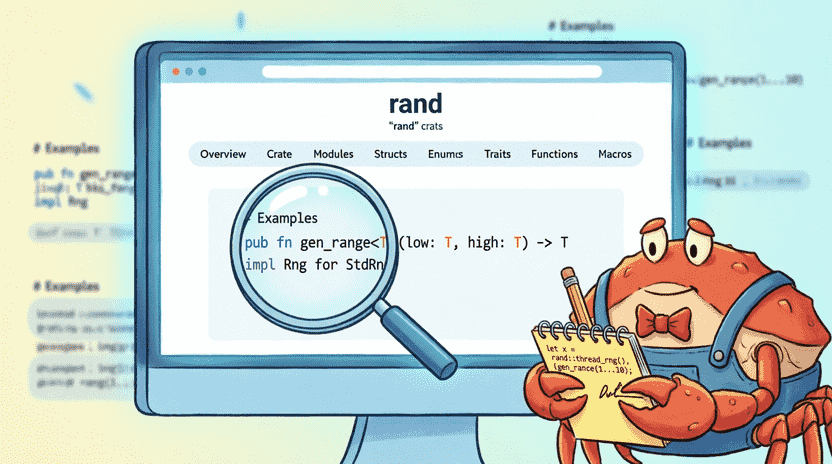
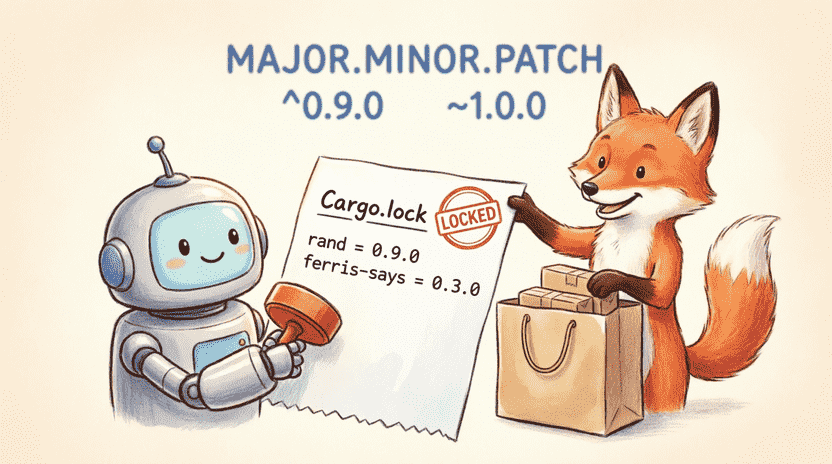
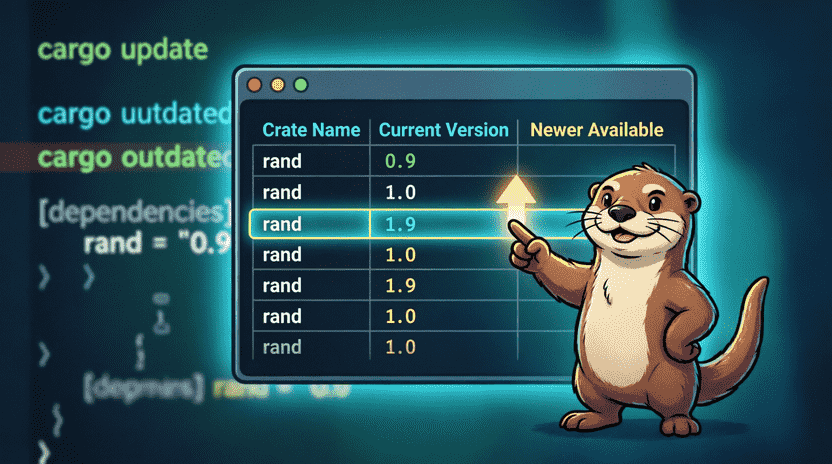
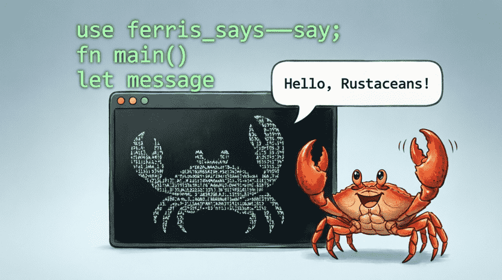

Land of Rust: Ferris the Space Crab’s Adventures
Chapter 14: The Rust Toy Supermarket (Crates.io)
📑 Chapter Index
14.1. Borrowing Other People’s Toys
14.1.1. Story: The Big Toy Store
14.1.2. What is crates.io?
14.1.3. Adding a Dependency to Cargo.toml
14.1.4. Using a Crate in Code
14.2. Searching and Choosing a Crate
14.2.1. Going to crates.io
14.2.2. Reading Documentation on docs.rs
14.2.3. Criteria for Choosing a Good Crate
14.2.4. Example: Using rand
14.3. Version Management (SemVer)
14.3.1. Semantic Versioning
14.3.2. Version Operators in Cargo.toml
14.3.3. Locking Versions with Cargo.lock
14.4. Updating Dependencies
14.4.1. cargo update
14.4.2. cargo outdated (External Tool)
14.5. Creating Our Own Crate
14.5.1. Creating a Library Project
14.5.2. Writing Code in lib.rs
14.5.3. Documentation with /// and //!
14.5.4. Building Local Documentation with cargo doc
14.5.5. Preparing for Publishing (Optional)
14.6. Project: Using ferris-says
14.6.1. Adding ferris-says
14.6.2. Writing a Program with a Crab Frame
14.7. Summary and Challenge
14.7.1. Concept Review
14.7.2. Challenge: Building a Small Crate Called pig_latin
14.1. Borrowing Other People’s Toys
14.1.1. Story: The Big Toy Store
One day Ferris got tired of having to write everything from scratch for every little task (like generating a random number or drawing a simple shape). His friend Bill said: “Why don’t you go to the big toy store for programming? It’s full of ready‑made tools that other people built and shared for free. You can borrow them and get your work done much faster!” 🛍️✨
In the Rust world that store is called crates.io. Each of those ready‑made tools is called a Crate.
Learning to use other people’s libraries means you can stand on the shoulders of giants and build bigger software – that’s the power of a computer wizard! 🧙♂️
👨👩👧 Note for parents and teachers
crates.io is the official repository of Rust libraries. This chapter shows how to use dependencies and manage versions – an essential real‑world skill. The official Rust book has a full chapter on crates.io:
doc.rust-lang.org/book/ch14-00-more-about-cargo.html
14.1.2. What is crates.io?
crates.io is a big website where programmers from all over the world put their code so others can use it. Cargo is like a smart assistant: when you tell it which tool you want, it goes there, downloads it, and attaches it to your project. You don’t have to copy‑paste files yourself! 📦🤖
14.1.3. Adding a Dependency to Cargo.toml
To borrow a Crate, you need to write its name in Cargo.toml. For example, if we want to use rand (which we already learned), open Cargo.toml and under the [dependencies] section write:
[dependencies]
rand = "0.9.0"
Now when you run cargo build, Cargo will go to crates.io, download version 0.9.0, and get it ready for use.
14.1.4. Using a Crate in Code
Now in main.rs we can use it:
use rand::Rng;
fn main() {
let mut rng = rand::thread_rng();
let secret_number = rng.gen_range(1..=100);
println!("Secret number: {}", secret_number);
}💡 The line use rand::Rng; is very important! It tells Rust: “Please bring the instructions for generating random numbers as well.” If you don’t write this line, the compiler won’t recognise gen_range.
![[Illustration: Cartoon illustration of a friendly crab (Ferris) pushing a shopping cart in a giant digital supermarket. The shelves are filled with glowing boxes labeled with crate names like “rand”, “serde”, “tokio”. A friendly cargo robot scans a box and adds it to the cart. Style: vibrant children’s book, playful tech metaphor, soft lighting, 16:9.]](assets/images/14.1.png)
14.2. Searching and Choosing a Crate
14.2.1. Going to crates.io
Open your browser and go to crates.io. In the search bar type anything you want (e.g., json or image). You will see a list of Crates.
14.2.2. Reading Documentation on docs.rs
Every Crate has a link to its Documentation (Docs), which usually goes to https://docs.rs/crate-name. That is like the instruction manual for a toy: it explains how to install it, what functions it has, and includes ready‑made examples. Always take a look at docs.rs before using a crate! 📖
14.2.3. Criteria for Choosing a Good Crate
Anyone can publish a Crate, so some are better than others. Pay attention to these things:
🔹 Number of downloads: the more downloads, the more people are happy with it.
🔹 Last update: if it hasn’t been updated for years, it might not work with new Rust versions.
🔹 Complete documentation: does it have a simple example? Are functions explained?
🔹 License: make sure the license is open (e.g., MIT or Apache-2.0).
14.2.4. Example: Using rand
Let’s try another example: generating a random RGB colour:
use rand::Rng;
fn main() {
let mut rng = rand::thread_rng();
let red = rng.gen_range(0..=255);
let green = rng.gen_range(0..=255);
let blue = rng.gen_range(0..=255);
println!("Random colour: rgb({}, {}, {})", red, green, blue);
}Every time you run it, you’ll see a new colour! 🎨

14.3. Version Management (SemVer)
14.3.1. Semantic Versioning
Version numbers in Rust have three parts: MAJOR.MINOR.PATCH (e.g., 1.2.3). This is a worldwide convention:
🔸 MAJOR: when the first number changes, it means big, incompatible changes have been made (like a game v1 where the rules are completely different from v2).
🔸 MINOR: when the middle number changes, it means new features have been added but old code still works.
🔸 PATCH: when the last number changes, it means only bugs have been fixed – nothing breaks. 🐛➡️✅
14.3.2. Version Operators in Cargo.toml
In Cargo.toml you can be more precise about which versions you accept:
| Writing in TOML | Meaning |
|---|---|
"0.9.0" | exactly version 0.9.0 (same as ^0.9.0) |
"^0.9.0" | any compatible version (i.e., 0.9.x with x >= 0). This is Cargo’s default. |
"~0.9.0" | only 0.9.x (doesn’t allow MINOR bumps). |
"*" | any version! (not recommended – it might suddenly break your program). |
💡 To start, just using "0.9.0" or "0.9" is enough and safe.
14.3.3. Locking Versions with Cargo.lock
The first time you run cargo build, Cargo creates a file called Cargo.lock. This file writes down exactly which version of each Crate was installed today.
If you give your project to a friend, and they also have the Cargo.lock file, they will install exactly the same versions you installed. That way nobody’s program breaks for no reason! 🔒📝

14.4. Updating Dependencies
14.4.1. cargo update
After a while, the Crates you use might get updated. To make Cargo check for and install newer compatible versions, run:
cargo update
This command updates Cargo.lock but does not change Cargo.toml.
14.4.2. cargo outdated (External Tool)
If you’re curious which Crates have new major versions available, you can install a helper tool:
cargo install cargo-outdated
cargo outdated
It will show you a nice table of which dependencies are out‑of‑date. 📊

14.5. Creating Our Own Crate
14.5.1. Creating a Library Project
Now that we’ve learned how to borrow, why don’t we build our own tool? Let’s make a library project (not an executable):
cargo new my_math --lib
cd my_math
This time Cargo creates a src/lib.rs file instead of main.rs. That is the starting point of your library! 📚
14.5.2. Writing Code in lib.rs
In lib.rs we write a few simple functions:
#![allow(unused)]
fn main() {
//! This is a simple library for math operations.
/// Adds two integers together.
///
/// # Example
///
/// ```
/// let result = my_math::add(2, 3);
/// assert_eq!(result, 5);
/// ```
pub fn add(a: i32, b: i32) -> i32 {
a + b
}
/// Subtracts one integer from another.
pub fn subtract(a: i32, b: i32) -> i32 {
a - b
}
}14.5.3. Documentation with /// and //!
🔹 //! at the beginning of the file: used to describe the whole library.
🔹 /// before a function/struct: used to describe that specific item.
💡 The text inside /// can be Markdown. Even code inside ````rustblocks is tested bycargo test`, so we can be sure our examples always work!
14.5.4. Building Local Documentation with cargo doc
To see your documentation in a browser, just type:
cargo doc --open
A professional‑looking page similar to docs.rs will open, containing your own explanations! Look how nice it is? 🌟
14.5.5. Preparing for Publishing (Optional)
If one day you want to put your library on crates.io so everyone can use it:
- Create an account on crates.io and get an API token.
- In the terminal run
cargo loginand paste the token. - Make sure your
Cargo.tomlhas the necessary information (description,license,authors). - Run the magic command:
cargo publish🚀
(You don’t have to actually publish for practice!)
![[Illustration: A cozy desk setup with a laptop showing a beautiful documentation page generated by cargo doc. Floating around are markdown symbols, function signatures, and a glowing “cargo doc –open” badge. Ferris proudly holds a printed manual. Style: warm, educational children’s book illustration, inviting atmosphere, 16:9.]](assets/images/14.5.png)
14.6. Project: Using ferris-says
14.6.1. Adding ferris-says
Let’s try a fun crate that prints a picture of Ferris with a custom message. In a new project’s Cargo.toml write:
[dependencies]
ferris-says = "0.3"
14.6.2. Writing a Program with a Crab Frame
Write the following code in main.rs:
use ferris_says::say;
use std::io::{stdout, BufWriter};
fn main() {
let message = String::from("Hello friends! I am Ferris 🦀");
let width = message.chars().count();
let mut writer = BufWriter::new(stdout());
say(&message, width, &mut writer).unwrap();
}When you run cargo run, the output will look something like this:
____________________________
< Hello friends! I am Ferris 🦀 >
----------------------------
\
\
_~^~^~_
\) / o o \ (/
'_ - _'
/ '-----' \
Isn’t that cute? Now you can replace the message with anything you like! 🎤

14.7. Summary and Challenge
14.7.1. Concept Review
In this chapter you learned:
✅ crates.io: the big store of Rust libraries.
✅ Cargo.toml: where you write your dependencies ([dependencies]).
✅ SemVer: the MAJOR.MINOR.PATCH versioning rule.
✅ Cargo.lock: locking versions to ensure consistent builds.
✅ cargo update and cargo outdated: managing updates.
✅ Building a library: using cargo new --lib and the lib.rs file.
✅ Documentation: using /// and cargo doc.
✅ Sharing your code with others means you become part of the big Rust family – a huge step toward becoming a computer wizard! 🧙
🧠 Sometimes things are hard, and that’s okay!
Managing dependencies and choosing the right version might feel a bit confusing at first. Don’t worry – Cargo does most of the work for you. With a little practice, adding a new crate will become as easy as drinking water.
14.7.2. Challenge: Building a Small Crate Called pig_latin
Create a library named pig_latin that has a public function to_pig_latin(word: &str) -> String. This function should convert an English word to Pig Latin:
🔸 If the word starts with a consonant, move the first letter to the end and add "ay". ("hello" → "ellohay")
🔸 If it starts with a vowel (a, e, i, o, u), just add "hay" to the end. ("apple" → "applehay")
Then create a separate executable project and add your library as a local dependency, then test it with a few words.
💡 Local dependency hint: In the executable’s Cargo.toml write:
[dependencies]
pig_latin = { path = "../pig_latin" }
💡 Sample function answer:
#![allow(unused)]
fn main() {
pub fn to_pig_latin(word: &str) -> String {
let vowels = ['a', 'e', 'i', 'o', 'u', 'A', 'E', 'I', 'O', 'U'];
let mut chars = word.chars();
if let Some(first_char) = chars.next() {
if vowels.contains(&first_char) {
format!("{}-hay", word)
} else {
format!("{}-{}ay", chars.as_str(), first_char)
}
} else {
String::new()
}
}
}Now you both know how to use ready‑made libraries and how to create your own library to share with others. In the next chapter we’ll meet Smart Pointers – tools like Box, Rc, and RefCell that help us manage data more intelligently. 📦🧠✨
![[Illustration: Ferris wearing a graduation cap and holding a glowing “Chapter 14 Master” badge. Floating around him are a shopping cart, a Cargo.lock receipt, a lib.rs file, and a documentation book. Encouraging, vibrant children’s book illustration, celebratory mood, 16:9.]](assets/images/14.7.png)